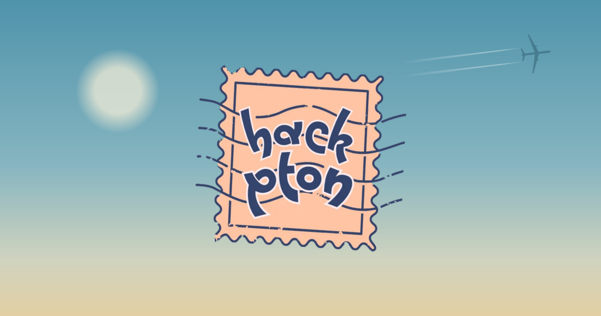

NEXT ON THE RADARHackPrinceton
Princeton University · Princeton, NJ
APPLICATION PENDINGApplied — waiting to hear back.
Visit event ↗I build software, explore AI, and turn “what if?” into things you can actually use.
AI experiments, useful tools, and a few very late nights.
A passport of places, prototypes, and things learned along the way.

NEXT ON THE RADARPrinceton University · Princeton, NJ
APPLICATION PENDINGApplied — waiting to hear back.
Visit event ↗Computer Science
GPA 3.99 / 4.0BASED IN SEATTLE, WAI’m a Computer Science student at the University of Washington, interested in software engineering, AI, and how developers actually build things.
My work spans full-stack applications, developer tools, LLM systems, and research. I spent this past summer at Pitt’s LRDC FACET Lab and now work with Carnegie Mellon’s Software and Societal Systems Department.
Read my resume ↗Research, software, a wild project idea — I’m happy to talk.
Send me an email ↗rafay ~ terminal
Welcome to my corner of the internet.
Type help to see what you can explore.